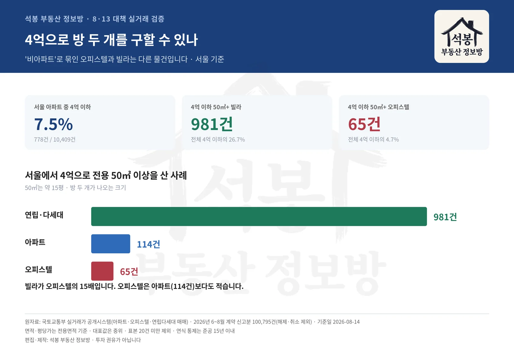
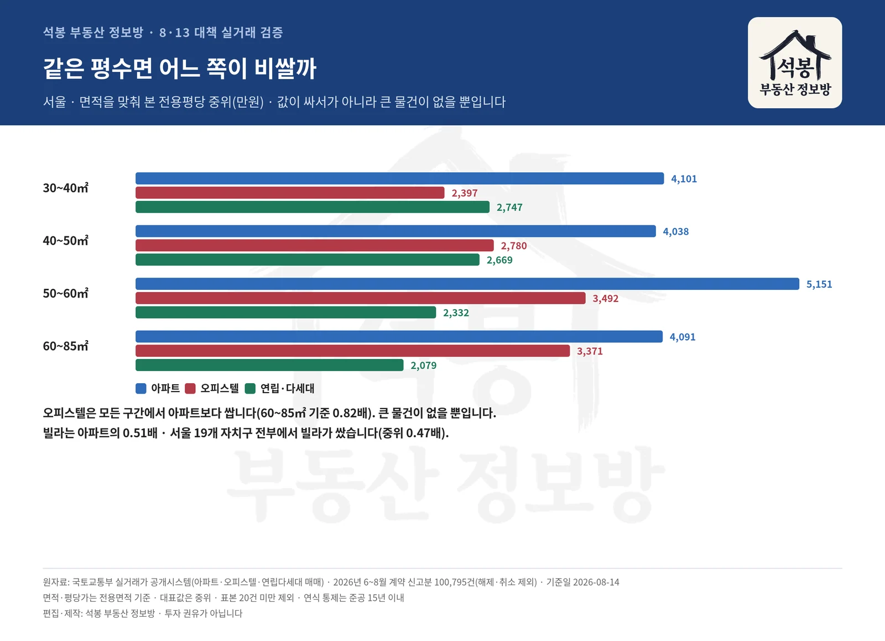
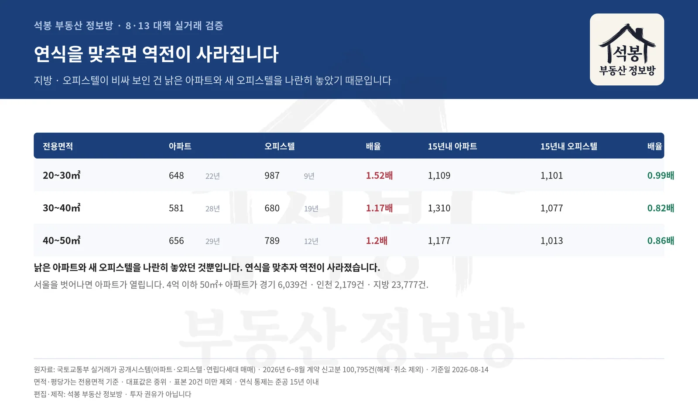

8·13 대책에 청년이 4억 이하 비아파트를 살 때 대출을 지원한다는 내용이 담겼습니다. 곧바로 "오피스텔만 사라는 거냐"는 반응이 나왔고요. 저도 처음엔 같은 생각이었는데, 실거래를 열어보니 조금 다른 그림이 보였습니다. 2026년 6월부터 8월까지 신고된 아파트·오피스텔·연립다세대 매매 100,795건을 같은 면적·같은 연식으로 맞춰 견줘봤습니다. 정책을 두고 제가 데이터로 읽은 개인적인 시선이니 편하게 봐주시면 좋겠습니다.
먼저, 정부 말이 틀리지 않았습니다
서울에서 4억으로 살 수 있는 아파트는 석 달 동안 778건 거래됐습니다. 서울 아파트 거래 10,409건의 7.5%입니다. 뒤집어 말하면 4억을 들고 서울 아파트 시장에 가면 92.5%는 아예 문이 닫혀 있습니다. 같은 돈으로 오피스텔은 73.1%, 연립다세대는 61.1%의 물건이 사정권에 들어옵니다.
청년에게 아파트를 권하기 어려운 조건인 건 맞습니다. 문제는 그다음입니다. '비아파트'라는 한 단어에 묶인 두 상품이 실제로는 성격이 아주 다릅니다.
여기서부터는 회원에게 보여드립니다
카카오 로그인 3초면 전문을 읽을 수 있습니다. 무료입니다.
가입하시면 지역 시장조사 보고서(약식)를 2회 무료로 요청하실 수 있습니다.
이미 회원이면 같은 버튼으로 로그인만 됩니다
4억으로 방 두 개를 구할 수 있나

4억 이하 물량 비교
전용 50㎡면 대략 15평, 방 두 개가 나오는 크기입니다. 각 상품에서 4억 이하로 이만한 집이 몇 건이나 거래됐는지 세어봤습니다.
지역
아파트
오피스텔
연립·다세대
4억 이하
50㎡+
4억 이하
50㎡+
4억 이하
50㎡+
서울
778건 7.5%
114 14.7%
1,376건 73.1%
65 4.7%
3,680건 61.1%
981 26.7%
경기
7,538건 28.5%
6,039 80.1%
1,351건 72.0%
314 23.2%
3,012건 87.7%
1,602 53.2%
인천
2,795건 51.6%
2,179 78.0%
553건 97.4%
279 50.5%
1,619건 99.1%
568 35.1%
지방
27,956건 72.2%
23,777 85.1%
1,645건 96.0%
401 24.4%
2,557건 96.1%
1,662 65.0%
서울을 보면 답이 분명합니다. 4억으로 50㎡ 이상을 산 사례가 연립다세대는 981건인데 오피스텔은 65건뿐입니다. 아파트(114건)보다도 적습니다. 오피스텔 거래 자체는 1,376건으로 적지 않은데, 그중 50㎡를 넘는 것이 4.7%에 그칩니다.
"비아파트"라고 묶였지만
연립다세대는 4억으로 50㎡ 이상을 981건 살 수 있고,
오피스텔은 65건입니다. 15배 차이입니다. 서울 · 2026년 6~8월 계약 신고분 · 전용면적 기준
오피스텔이 비싸서가 아닙니다

면적대별 전용평당가
여기서 오해하기 쉬운 대목이 있습니다. 저도 처음엔 "오피스텔이 비싸서 작은 것밖에 못 사는구나" 싶었는데, 면적을 맞춰 단가를 보니 정반대였습니다.
전용면적
아파트
오피스텔
연립·다세대
오피/아파트
빌라/아파트
30~40㎡
4,101만원 514건
2,397만원 291건
2,747만원 927건
0.58배
0.67배
40~50㎡
4,038만원 824건
2,780만원 174건
2,669만원 1,315건
0.69배
0.66배
50~60㎡
5,151만원 2,801건
3,492만원 193건
2,332만원 1,118건
0.68배
0.45배
60~85㎡
4,091만원 4,464건
3,371만원 185건
2,079만원 853건
0.82배
0.51배
서울 · 평당 중위(전용면적 기준)
서울은 모든 면적대에서 오피스텔이 아파트보다 쌉니다. 60~85㎡ 구간에서도 아파트 4,091만원 대 오피스텔 3,371만원입니다. 그러니 오피스텔로 큰 집을 못 사는 건 값 때문이 아니라 애초에 큰 오피스텔이 지어지지 않았기 때문입니다. 오피스텔은 1인 가구용 소형으로 공급돼 왔고, 그 재고가 그대로 거래에 나타납니다.
반대로 연립다세대는 값 자체가 쌉니다. 같은 60~85㎡에서 아파트의 0.51배, 절반 수준입니다.
빌라가 싼 건 우연이 아닙니다
혹시 특정 동네 몇 건 때문에 그렇게 보이는 건 아닌지 확인해봤습니다. 같은 자치구 안에서, 같은 전용 60~85㎡로 묶어 아파트와 연립다세대를 직접 맞대봤습니다.
서울에서 양쪽 다 20건 이상 거래된 19개 자치구 전부에서 빌라가 쌌습니다. 배율 중위 0.47배(0.35~0.59배).
경기도 17개 시군구 전부, 중위 0.48배입니다. 예외가 한 곳도 없으니 몇 건짜리 우연은 아닙니다.
화곡동이 있는 강서구가 4억 이하 50㎡ 이상 물량 152건으로 서울에서 가장 많습니다. 은평구 132건, 도봉구 112건이 뒤를 잇습니다. 아래 표에서 보시면 대부분이 빌라입니다.
자치구
50㎡+ 합계
연립·다세대
아파트
오피스텔
강서구
152건
140
8
4
은평구
132건
124
4
4
도봉구
112건
65
32
15
강북구
102건
99
3
0
구로구
97건
66
18
13
관악구
94건
90
2
2
양천구
63건
53
9
1
금천구
62건
53
8
1
지방에서는 숫자가 거꾸로 보입니다

연식 통제 비교
지방 소형만 따로 보면 오피스텔이 아파트보다 비싸게 나옵니다. 이상해서 연식을 확인해보니 이유가 있었습니다.
전용면적
아파트 (연식)
오피스텔 (연식)
배율
아파트 15년내
오피스텔 15년내
배율
20~30㎡
648만원 22년
987만원 9년
1.52배
1,109만원
1,101만원
0.99배
30~40㎡
581만원 28년
680만원 19년
1.17배
1,310만원
1,077만원
0.82배
40~50㎡
656만원 29년
789만원 12년
1.2배
1,177만원
1,013만원
0.86배
지방 · 평당 중위(전용면적 기준)
지방의 소형 아파트는 지은 지 28년쯤 된 오래된 물건이고, 오피스텔은 19년으로 훨씬 젊습니다. 연식을 준공 15년 이내로 맞추자 역전이 전부 사라졌습니다. 결국 전국 어디서도 같은 조건이면 오피스텔이 아파트보다 비싸지 않습니다. 낡은 집과 새 집을 나란히 놓고 비교했던 것뿐입니다.
서울을 벗어나면 답이 바뀝니다
4억 이하 아파트가 전체 거래에서 차지하는 비중은 서울 7.5%, 경기 28.5%, 인천 51.6%, 지방 72.2%입니다. 같은 돈인데 지역을 옮기면 아파트 시장이 열립니다.
50㎡ 이상으로 좁혀도 마찬가지입니다. 4억 이하에서 50㎡를 넘는 아파트가 경기에 6,039건, 인천에 2,179건, 지방에 23,777건 있습니다. 서울(114건)과는 자릿수가 다릅니다. 아산처럼 공급이 이어지는 곳에서는 4억 아래로 새 아파트도 거래됩니다.
그래서 이 정책을 한 문장으로 줄이면 이렇게 됩니다. 서울에 살아야 한다면 빌라가 현실적인 선택지이고, 지역을 옮길 수 있다면 아파트가 열려 있습니다. 정책이 '비아파트'라고 뭉뚱그린 자리에 사실은 이 갈림길이 있습니다.
다만 이 말은 꼭 붙여야겠습니다
빌라가 아파트의 절반값인 데는 이유가 있습니다. 전세사기 여파로 수요가 얼어붙었고, 팔고 싶을 때 바로 팔리지 않는 환금성 문제도 큽니다. 값이 잘 오르지 않는다는 점도 그렇고요. 이 글은 "그러니 빌라를 사라"는 이야기가 아닙니다. 같은 예산에서 무엇을 얼마나 살 수 있는지를 숫자로 확인한 것이고, 그 위험까지 계산에 넣는 건 각자의 몫입니다. 저 역시 그 부분은 데이터로 보여드릴 수 없습니다.
정리하면, 정부가 청년에게 비아파트를 권한 방향 자체는 서울 사정을 보면 이해가 갑니다. 다만 오피스텔과 빌라를 한 단어로 묶어 둔 탓에 "4억으로 방 두 개"라는 목표에 실제로 닿는 건 빌라뿐이라는 사실이 가려집니다. 오피스텔은 값이 비싸서가 아니라 큰 물건이 없어서 대안이 되기 어렵습니다.
여기까지는 제가 실거래 숫자를 놓고 읽어본 개인적인 견해입니다. 같은 데이터를 보고도 다르게 판단하실 수 있고, 그게 자연스럽다고 생각합니다. 의견 주시면 다음 글에 반영해서 다시 살펴보겠습니다.
원자료: 국토교통부 실거래가 공개시스템(아파트·오피스텔·연립다세대 매매) · 2026년 6~8월 계약 신고분 100,795건(해제·취소 제외) · 기준일 2026-08-14
면적·평당가는 전용면적 기준, 대표값은 중위(가운데 값) · 표본 20건 미만 구간은 비교에서 제외 · 연식 통제는 준공 15년 이내
정책 내용은 2026-08-13 발표 보도 기준이며, 세부 요건은 시행 과정에서 달라질 수 있습니다 · 편집·제작: 석봉 부동산 정보방 · 투자 권유가 아닙니다.